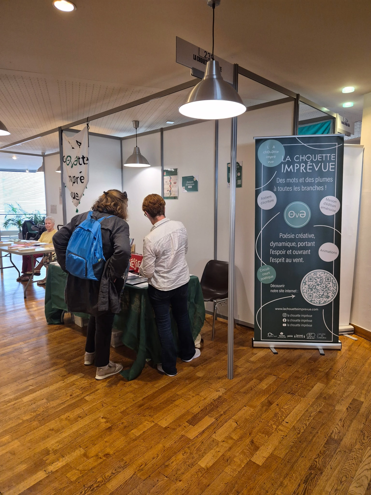
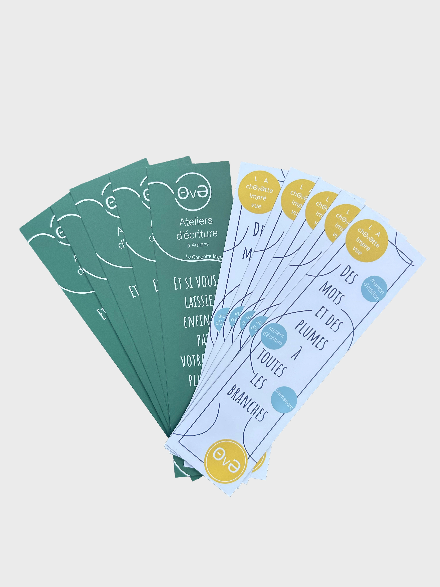
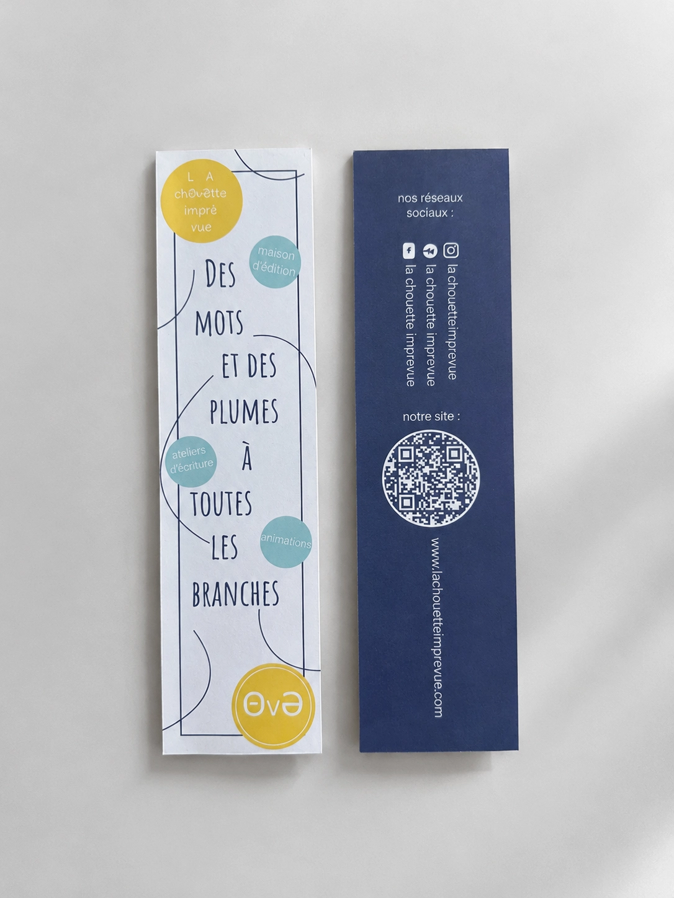
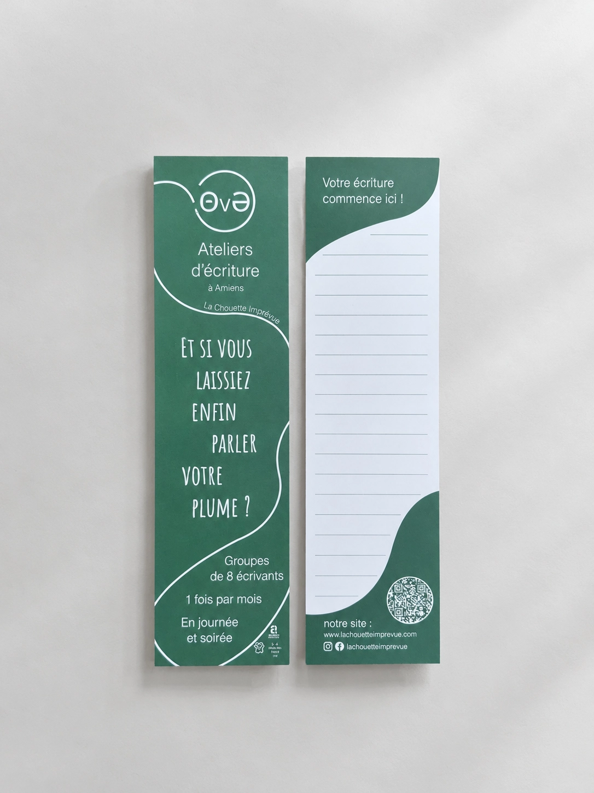

Kakémonos
La Chouette Imprévue





Kakémono pour la maison d’édition La Chouette Imprévue à Amiens, conçu pour habiller leur stand lors de salons du livre. Le projet s’appuie sur leur univers graphique en reprenant leurs couleurs, formes et éléments identitaires afin de créer un support cohérent, lisible et attractif, avec déclinaisons en marque-pages.